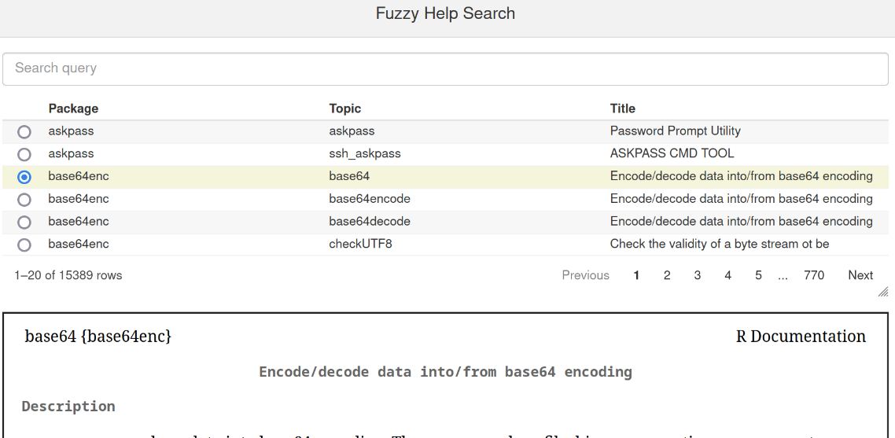

Rのヘルプを便利にするfelpパッケージのv0.6.0をリリースしました。
felpはfunctional helpの略称です。数年前のTokyo.Rでの雑談がきっかけで生まれたパッケージで主に以下の機能があります。
fuzzyhelp(): パッケージや関数のヘルプをあいまい検索するShinyアプリfelp(): help()を拡張し、ヘルプと同時に関数の実装も表示する関数?.: 関数名前を入力してからヘルプを見たくなった時に、関数名の頭まで戻らずとも、print?.といった具合に関数名の後ろに?.をつけるだけでヘルプを表示する疑似後置演算子?p: ?.のパッケージ版でdplyr?.などして使う後置演算子最近のリリースはもっぱらfuzzyhelp()の改善です。
fuzzyhelp()の改善あいまい検索は、それなりに重たい処理です。
fuzzyhelp()では、fzf由来の、それなりに軽量で高品質なアルゴリズムを移植＆チューニングしていますが、それでもやや時間がかかります。
そこで、memoiseパッケージを導入して、一度検索した結果をキャッシュし、再検索のパフォーマンスを改善しました。

RのHTML版ヘルプは、tools::startDynamiHelp()を使って内部的にサーバーを立てています。一方RStudio Serverは自身がヘルプサーバーを兼ねているらしく、URLが異なっていました。このためプレビューが表示できない問題がありました。
http://localhost:{port}/library/{package}/html/{topic}.htmlhttp://{RStudio ServerのURL}/help/library/{package}/html/{topic}.htmlあいまい検索をもっと高速にしたい思いがあります。これはRで実装したアルゴリズムの改善でも多少見込みがありますが、個人的な興味から、extendrパッケージでRustと連携してみたいと考えています。 Rustにはskimというあいまい検索CLIツールがあり、これを流用できないかと目論んでいます。
すぐとりかかれるかはわかりませんが、ぼちぼちやってきます。